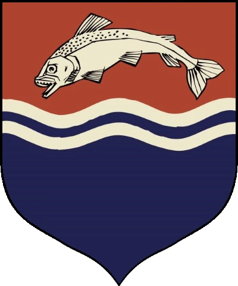

| Ruling House | Sigil |
|---|---|
| Tully |  |
| Ruler | |
|---|---|
| Hoster Tully, Lord Paramount of the Trident |

|
| Info | |
|---|---|
| Capital | Riverrun |
| Geography | Broad and fertile river basins, temperate |
| Bastard Surname | "Rivers" |
| Other Notable Houses |
|
| House Tully | |
|---|---|
| Words | "Family, Duty, Honor" |
| Family members |
|